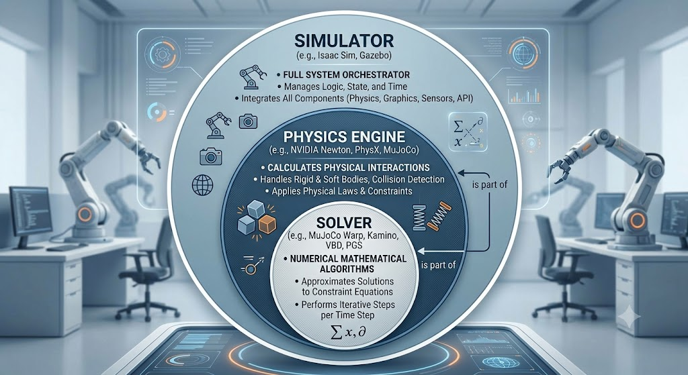
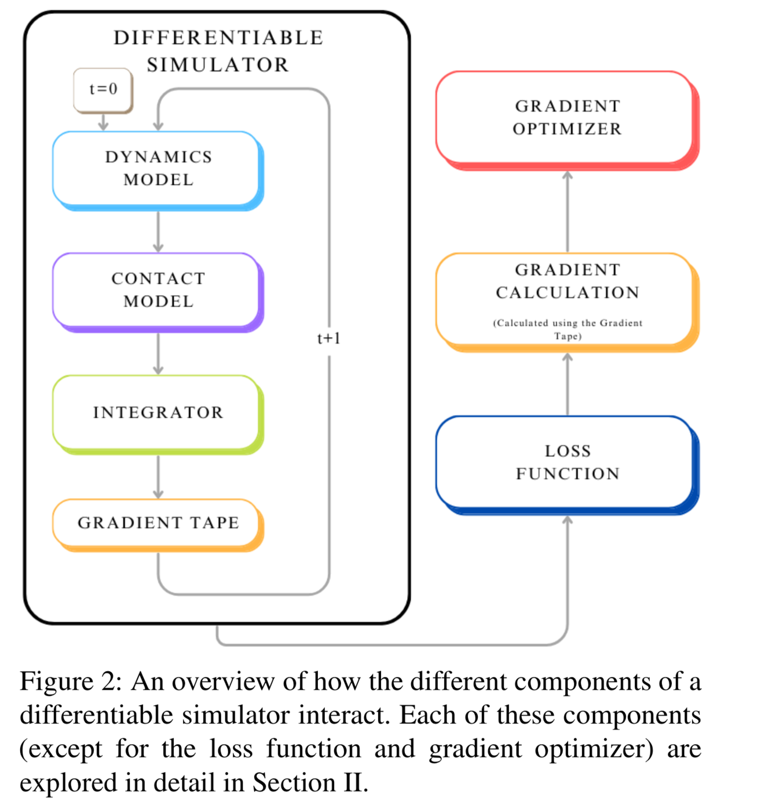
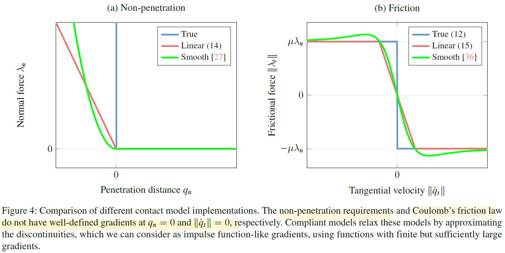
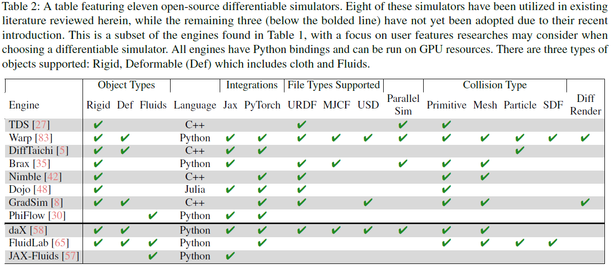
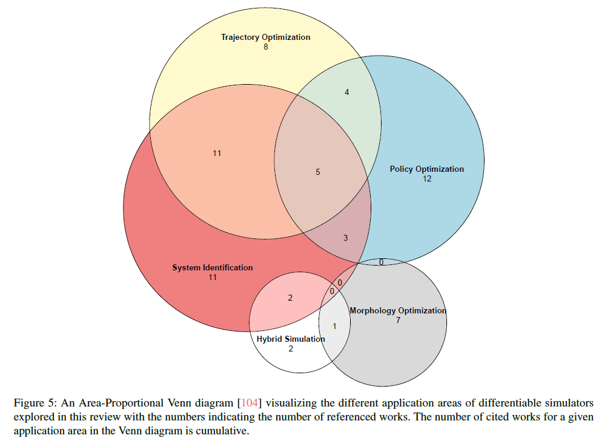
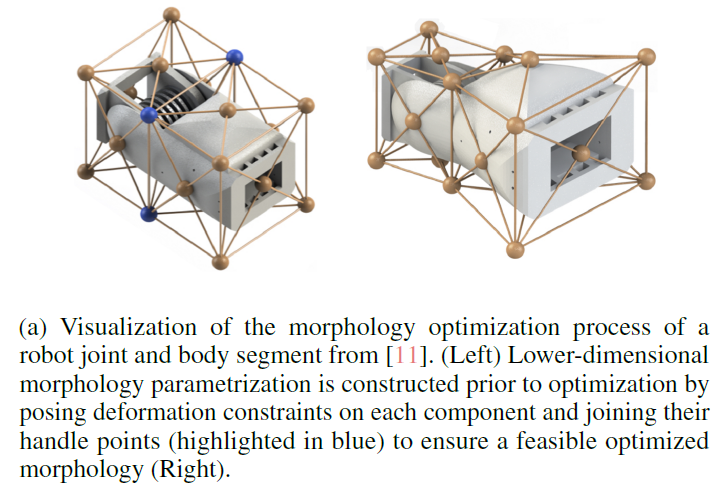
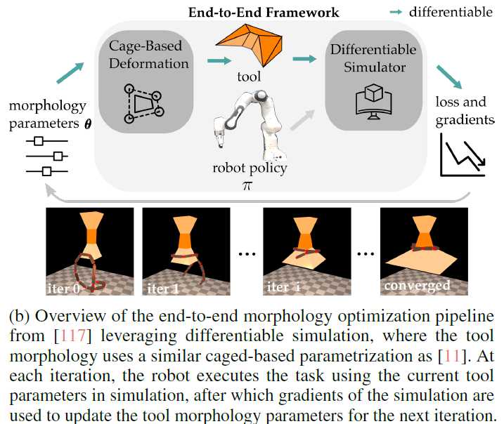

Reference
-
Review
-
System identification
https://arxiv.org/abs/2011.01734
-
Policy optimization
-
Gradient calculation
Terms
Simulator : isaac sim, gazebo, mujoco, newton, …
Physics engine : physx, newton (warp), …
Solver : SemiImplicit, mujoco warp, Kamino, Implicit MPM, Featherstone,…
dynamics model : rigid body, soft body, fluid, …
-
Eular diagram

Introduction
-
Differential simulator vs. traditional simulator
-
Gradient information.
For what? Ans: optimization
What gradient?
Example: friction estimation
https://www.youtube.com/watch?v=d248IWMLW9o
Goal: 方塊在地面上滑動，要讓方塊在模擬器裡的動態跟真實的世界裡的方塊動態一樣
- 位移:
- 摩擦係數:
- loss function: , e.g.
- Gradient:
-
Actually BPTT
-
update friction
-
-
Components

-
Gradient calculation
-
automatic differentiation
relies on the fact that even complex functions are composed of elementary operations (e.g., addition, subtraction, etc.) and functions (e.g., sin, cos, exp, etc.), which allows for repeatedly applying the chain rule to these expressions in a programmatic way to compute the value of a derivative
- Forward mode AD
- Reverse mode AD
-
symbolic differentiation
-
analytical gradient
- implicit Differentiation
- adjoint Method
-
-
Dynamics model
-
rigid body dynamics
-
newton-eular dynamics
-
Lagrangian dynamics
-
hamiltonian dynamics
-
-
soft body dynamics
- continuum mechanics
- MLS-MPM
- FEM
- projective dynamics
- compliant position-based dynamics (XPBD)
- continuum mechanics
-
fluid
-
-
Contact model

-
Integrator
-
explicit (forwards) integration → less stable,
-
implicit (backwards) integration → more stable
特性 顯式積分 (Explicit) 隱式積分 (Implicit) 誤差來源 能量積累導致的「爆炸」 能量損耗導致的「數值阻尼」 小步長表現 更準確，能還原真實物理 準確，但仍可能帶有微小阻尼 大步長表現 數值發散，物體噴飛 極其穩定，系統不崩潰 計算代價 每個步長極快，但需模擬更多步 每個步長慢（需解方程），但步數少
-
-
-
Simulators

-
Applications

All papers that investigate use cases of differentiable simulators can be categorized into one of these five applications area
-
System Identification
-
differentiable rendering techniques → calculate the pixelwise mean square error between recorded video fo the true system and a rendered video from the differentiable simulator
-
Example
ball-in-cup
https://sites.google.com/view/ball-in-a-cup-in-4-minutes/
friction estimation (1:11)
-
-
Trajectory Optimization
-
Morphological Optimization


-
Policy Optimization
-
Analytic policy gradient
-
Enhanced policy learning
- Policy optimization via differentiable simulation (PODS): extend from the Deterministic policy gradient (DPG)
- Short horizon actor critic (SHAC)
SHAC and PODS belong to RL algorithm
-
-
Neural Network Augmented Simulation
-
Callenges
- long horizon planning and control, the performance of differentiable simulators is hindered by landscape characteristics such as non-linearity, non-smoothness, and discontinuities.
- using deterministic gradients from these simulators can lead to sub-optimal behavior due to the inherent landscape characteristics.
- The phenomenon of ‘empirical bias’, where approximations of discontinuous dynamics lead to inaccuracies in gradient estimates
- Future directions
- Better Gradient Estimation
- Leveraging Gradient Information
- Long Horizon Tasks
- Differentiable Sensor Simulation
- Online Applications
- Real-to-Sim Transfer Learning
- Challenges for Widespread Adaptation
Pipeline
- System identification
- Policy optimization
- differential simulator: newton api
- obtain gradient tape